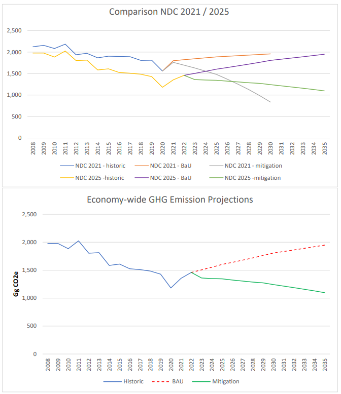

|
BARBADOS 2025 SECOND NATIONALLY DETERMINED CONTRIBUTION |
SUBMITTED IN FULFILLMENT OF OBLIGATIONS UNDER THE PARIS AGREEMENT ON CLIMATE CHANGE Government of Barbados |
|
ABAS |
Antigua and Barbuda Agenda for SIDS: A Renewed Declaration for Resilient Prosperity |
|
AOSIS |
Alliance of Small Island States |
|
AR5 / 6 |
IPCC Fifth / Sixth Assessment Report |
|
BAU |
business-as-usual |
|
BBD |
Barbados dollar |
|
BNEP |
2019 Barbados National Energy Policy |
|
BNOCL |
Barbados National Oil Company Limited |
|
BPOA |
Barbados Programme of Action |
|
BWA |
Barbados Water Authority |
|
C-SERMS |
CARICOM Caribbean Sustainable Energy Roadmap and Strategy |
|
CBIT |
Capacity Building Initiative for Transparency |
|
CCCCC |
Caribbean Community Climate Change Center |
|
CCF |
Contingent Credit Facility for Natural Disaster Emergencies |
|
CCRIF-SPC |
Caribbean Catastrophe Risk Insurance Facility |
|
CHENACT |
Caribbean Hotel Energy Efficiency Action Program |
|
CVF |
Climate Vulnerable Forum |
|
CZMU |
Coastal Zone Management Unit |
|
DRR |
Disaster-risk reduction |
|
EEZ |
Exclusive Economic Zone |
|
EU-CIF |
European Union Caribbean Investment Facility |
|
EV |
Electric vehicle |
|
FiT |
Feed-in Tariff |
|
GCF |
Green Climate Fund |
|
GDP |
Gross Domestic Product |
|
GDM |
IMF-administered Global Disaster Mechanism |
|
GHG / GHGI |
Greenhouse gas / GHG Inventory |
|
GNI |
Gross National Income |
|
GOB |
Government of Barbados |
|
GWP |
Global warming potential |
|
ICTU |
Information to facilitate clarity, transparency and understanding |
|
ICZM |
Integrated Coastal Zone Management |
|
IDB |
Inter-American Development Bank |
|
INDC |
Intended NDC |
|
IPCC |
Inter-governmental Panel on Climate Change |
|
IPPU |
Industrial processes and product use |
|
IRRP |
Integrated Resources and Resilience Plan |
|
MENB |
Ministry of Environment and National Beautification |
|
MEPS |
minimum energy performance standards |
|
MMA |
Marine Managed Area |
|
MMABE |
Ministry of Maritime Affairs and the Blue Economy |
|
MRV |
Monitoring, Reporting and Verification |
|
NAMA |
Nationally Appropriate Mitigation Actions |
|
NCDs |
non-communicable diseases |
|
NCRIPP |
National Coastal Risk Information Planning Platform |
|
NDC |
Nationally Determined Contribution |
|
NPC |
National Petroleum Corporation |
|
OECD |
Organisation for Economic Co-operation and Development |
|
PDP |
2021 Physical Development Plan Amendment |
|
PES |
Payments for environmental services |
|
PPP |
Public Private Partnerships |
|
PV |
Photo-voltaic |
|
R2RP |
Roofs-to-Roofs Programme |
|
SDGs |
Sustainable Development Goals |
|
SDRs |
Special Drawing Rights |
|
SIDS |
Small Island Developing States |
|
SPV |
Special Purpose Vehicle |
|
UNFCCC |
United Nations Framework Convention on Climate Change |
|
US$ / USD |
US dollars |
|
WSRN S-Barbados |
Water Sector Resilience Nexus for Sustainability in Barbados |
The Government of Barbados (GOB) ratified the United Nations Framework Convention on Climate Change (UNFCCC) in 1994 and the Kyoto Protocol in 2000. In September 2015, it communicated its Intended Nationally Determined Contribution (INDC) to the UNFCCC Secretariat. Barbados signed and ratified the Paris Agreement on 22 April 2016, which entered into force on 4 November 2016. At the same time, the INDC of Barbados became the first Nationally Determined Contribution (referred to as the 2015 NDC). An updated First NDC (2020-2030), which significantly enhanced Barbados' ambition, was communicated on 31 July 2021 (referred to as the 2021 NDC). This Second NDC covers the period 2025 - 2035 (from here on referred to as the 2025 Second NDC).
In view of the objectives of the Paris Agreement, in particular to pursue efforts to limit the average temperature increase to 1.5 °C compared to pre-industrial temperatures, the collective ambition in the 2015 and 2020 NDCs has been too low for achieving the goal. Barbados welcomes the contribution by the Inter-governmental Panel on Climate Change (IPCC) 2018 report on 1.5 degrees and Sixth Assessment Report as they provide a scientific basis for countries to enhance climate ambition significantly. Barbados wishes to highlight the need for significantly increased mitigation ambition as reflected in the Global Stocktake Decision (1/CMA5, paras. 18-42).
Notwithstanding Barbados' historically low level of responsibility for the increase of greenhouse gas concentrations in the atmosphere, this new NDC significantly increases its ambition. The 2021 NDC update aligned Barbados with other Small Island Developing States (SIDS) and members of the Alliance of Small Island States (AOSIS) by significantly enhancing ambition and increasing its mitigation contribution to be fully compatible with the objectives of the Paris Agreement.
Since 2021, Barbados has taken a suite of mitigation and climate resiliency measures, documented in this Second NDC. This Second NDC (2025-2035) reaffirms Barbados commitment to meeting the Paris Agreement objectives.
Barbados is the eastern-most Caribbean Island, located at 13º 4' North latitude and 59º 37' West longitude. The island is predominantly flat and is bounded in the east by the Atlantic Ocean and in the west by the Caribbean Sea. The closest neighboring islands are St. Lucia and St. Vincent. Barbados landmass has an area of 432 square kilometers, with 92 kilometers of coastline. Barbados' Exclusive Economic Zone (EEZ) is some 430 times larger, at 185,000 square kilometers, and represents a significant potential resource.
With a population of 269,090 (2021), the island is one of the most densely populated in the region with over 600 inhabitants per km2. Population growth is near zero percent and life expectancy is high at 79 years. According to the 2000 Census, the population is 93 percent of African descent, three percent of European descent, and the rest of Asian or mixed descent. English is the official language and an English- based dialect is widely spoken.
Barbados has a small, open economy, typical for the Caribbean and other small island states. It is now classified as a high-income country with a GDP of USD 7.65 billion (2024 current USD / nominal GDP: BBD 14.33 billion), which translates into a GDP per capita, adjusted for Purchasing Power Parity (PPP), of approximately $22,035 USD.
Since independence, Barbados has diversified from a low-income agricultural economy into a more diversified economy, built on tourism and offshore banking. It now has one of the Caribbean's highest per capita incomes. Travel and tourism remain dominant forces in the Barbadian economy. As of 2024, the tourism sector's direct contribution to Barbados' GDP is estimated at 17.5%, according to the Central Bank of Barbados. When considering both direct and indirect effects, the World Travel and Tourism Council (WTTC) estimates that tourism contributes approximately 31% to the country's GDP. The financial services sector, launched in 1985, has become the country's second biggest source of foreign exchange contributing approximately 10% to GDP.
Barbados remains vulnerable to economic downturn in its main trade partners, the USA, UK and EU. Only a full decade after the 2008 financial crisis, did the tourism sector recover from its impact, only to be hit by the COVID-19 pandemic. The economy rebounded in 2022 with the resumption of international tourism and in 2024, the sector experienced significant growth, with long-stay arrivals increasing by 10.7%, driven by expanded airline capacity and major events like cricket matches and the Crop Over Festival. It is important to note that while the number of long-stay visitors increased in 2024, the economic return per visitor has declined. This dependence on the tourism sector poses a real challenge to near- and medium-term economic development.
In 2018, a debt restructuring agreement was reached with the IMF. The government then faced the challenge of enacting structural fiscal reforms to strengthen public finances against a backdrop of weak economic growth and the demand of a strong stimulus package to mitigate the COVID-19 pandemic. The pandemic underlined the importance of maintaining the capacity of the government to respond to crises and protect its people. The virtual collapse in international tourism, which accounted for 31 percent of GDP (direct and indirect contributions), depressed economic activity. The resulting economic shock was dampened by the government taking monetary and macro-financial measures, as well as boosting capital spending and taking a range of other measures, including introducing social programs for displaced workers to mitigate the effects of the pandemic.
In sum, the adverse social, fiscal and GDP impact of the pandemic was significant. Having returned to growth in 2022, Barbados' economy is poised for sustained growth in 2025 and beyond. An annual average real GDP expansion rate of 3 percent is anticipated in the short- to medium-term.
Barbados remains vulnerable to climate-related risks, including natural disasters and rising sea levels, which pose significant threats to key sectors like tourism and agriculture. To mitigate these risks, the Government is advancing climate resilience initiatives such as renewable energy projects, sustainable tourism practices, and investments in disaster preparedness.
The country's active engagement with multilateral institutions and development partners provides access to technical assistance, concessional financing, and investment opportunities. Initiatives like the debt-for-climate swap and collaborations with Regional and Multilateral Development Banks as well as global climate fund organisations, demonstrate Barbados' commitment to addressing climate challenges while promoting sustainable growth with international support.
Strengthened relationships with key trading partners and regional organisations will further enhance economic resilience by improving market access and fostering new avenues for investment. On the domestic front, unpredictable weather conditions and water scarcity are likely to further limit agricultural production, potentially increasing local food prices.
Barbados's high level of indebtedness, while declining, continues to constrain its capacity for fiscal stimulus. While recent debt restructuring has improved the Government of Barbados' position, more concessional finance is needed to maintain its trajectory to achieve debt sustainability.
Barbados continues to call for global financial reform under the Bridgetown Initiative, aimed at overhauling international finance institutions to provide better access to climate financing and debt relief for vulnerable developing nations, and objective measures of vulnerability, the MVI now adopted by the UNGA, to determine access to concessional funding to be applied.
In the wake of the COVID-19 pandemic, rising debt service costs and Barbados' ambitious economic reform programme under the IMF have constrained public investment, particularly in relation to its climate resilience investment needs. As a partial mitigation, Barbados has successfully completed two innovative debt conversions: a debt-for-nature swap in 2022 and a debt-for-climate resilience swap in 2024. These swaps not only improve fiscal sustainability but create fiscal space to invest in nature and resilience, in line with Governments' long-term development goals. For a detailed description of the debt swaps, see the chapter on Finance below.
Since the 1994 Barbados Programme of Action (BPOA), the 2005 Mauritius Strategy for the further Implementation of the BPOA (MSI), and the 2014 Small Island Developing States Accelerated Modalities of Action (SAMOA Pathway), the unique challenges faced by SIDS and the need for support by the international community have been recognized by the United Nations system. Whereas SIDS are considered global leaders on climate change, financial system reform and ocean governance, the vulnerability to external shocks, be it the 2008 financial crisis, the 2020 pandemic, or the increasing frequency of natural disasters such as hurricanes, flooding and droughts, leaves Barbados and its SIDS allies highly exposed. The SAMOA Pathway showed that more action is needed. This was reaffirmed in 2024 by the "Antigua and Barbuda Agenda for SIDS: A Renewed Declaration for Resilient Prosperity" (ABAS), the outcome document of the fourth SIDS conference, which Barbados strongly supports.
The ABAS represents a critical step forward for SIDS, aiming to transform our economies, putting them on a clear path towards sustainable development in the face of unique challenges and vulnerabilities. The success of ABAS will depend on the commitment and cooperation of the international community in supporting SIDS to achieve their sustainable development objectives.
The ABAS charts a path towards sustainable development, resilience, and prosperity and contains concrete actions across the following areas:
Resilient Economies;
Climate Action and Environmental Protection;
Financial Support and Debt Management;
Human Capital and Social Development;
Technology and Data;
Partnerships and International Support; and
Monitoring and Evaluation.
The 2030 Agenda for Sustainable Development recognizes that each country has different realities, capacities, and levels of development and faces its own specific challenges to achieve sustainable development. The situation of the most vulnerable countries, including SIDS, deserves special differentiated attention. The 2030 Agenda for Sustainable Development requires a new strategic approach that strengthens trust in international cooperation; encourages a collective action for the provision of global and regional public goods; increases resilience to the lack of appropriate finance, trade and technological shocks; protect the rights of minorities; and strengthens the interests of the majority over the interests of groups that are organized and can contribute capital and technology to strengthen capacities.
The 2030 Agenda for Sustainable Development presents an opportunity for SIDS to optimize the potential benefits of implementing the 17 SDGs, and enhance the capacity of national frameworks to guide coherent policy design and integrated cross-sectoral implementation of development objectives. Barbados uses targeted policy formation and a monitoring mechanism on progress that identifies the achievement of its national development goals and their ability to ensure that actual development leaves no one behind; and that different groups of people; inclusive of women, youth, persons with disabilities, older persons and rural dwellers, are all engaged in and benefit from national development efforts.
These frameworks and agendas underline the need for effective international agreements that cap and lower global temperatures; limit the spread of pandemics; support nutritional security; reduce poverty and inequality; and encourage energy diversification using renewable sources and energy efficiency. Richer, more developed countries must appreciate the vulnerability of SIDS, and recognize the urgent need for access to financing to help build resilience to these external risks.
The vision of Mission Barbados has guided the formulation of this Second NDC:
Barbados is facing a number of global and local challenges, which requires an innovative, and a mission- oriented approach to economic and social development that will deliver value to the people of Barbados while at the same time positioning Barbados as a global leader in implementing a new, more inclusive and sustainable growth trajectory.
In 2023, the Social Partnership, through consultations chaired by the Prime Minister of Barbados, conceptualized the Declaration of Mission Barbados that identified the following challenges:
An unhealthy planet in crisis;
A constantly changing value system, which threatens social cohesion;
Food and water insecurity;
Deteriorating physical and mental health and pockets of social instability;
Development deficit that has spawned financial marginalization and worker vulnerability; and
Inequitable Digital Access and Slow Technological Conversion.
By 2030, become a clean and beautiful large-ocean state, championing sustainable development locally and globally - with the goal of all domestic activities becoming 100% sustainable by 2035.
By 2030, transform Barbados into a country of active, involved citizens. All Barbadians will feel empowered and engaged in the social, economic, and cultural development of the country as confident, creative, compassionate and entrepreneurial citizens.
By 2030, ensure that every Barbadian has equitable and reliable access to clean water and nutritious food that are affordable.
By 2030, create a society that prioritizes wellness and happiness. Improve public health and safety, leading to a 50% reduction in new cases of non-communicable diseases and a 50% reduction in crime.
By 2030, empower and enfranchise all Barbadian workers and families by creating opportunities for ownership and wealth creation that enable Barbadians to take better care of themselves and each other and reduce the rate of poverty by 50%.
By 2030, transform Barbados to be a high-functioning, resilient society with seamless access to services and meaningful digital inclusion for all Barbadians.
The national Physical Development Plan, provides a vision for the sustainable growth and development of the nation by setting out policies to guide relationships among land uses, built form, natural heritage, cultural heritage, mobility and national infrastructure. It is also intended to be a framework to facilitate and guide investment, both public and private, in Barbados for the next 10 years to advance a green, prosperous, healthy and resilient nation.
The document has two parts, with Part A setting out National Policies, and Part B comprising a series of nine (9) Community Plans.
Appendix A comprises seventeen (17) National Maps including maps related to settlement structure, land use, different types of assets (natural and built environment), mobility and infrastructure. As such, the PDP is both a set of national policies and island-wide spatial plan covering the entire terrestrial area. The PDP addresses climate and disaster resilience in physical planning. The PDP identifies critical development challenges for Barbados, identifies core assets to be protected (including water and natural heritage systems), and sets out national policies to address these challenges and protect the core assets.
As Barbados seeks to sustainably leverage the opportunities of its marine space and develop its Blue Economy, it is critical that similar high-quality policy and spatial planning coverage be extended for the entire EEZ. Currently, the near-shore coastal zone is covered by the Integrated Coastal Zone Management Plan, which nests within the broader spatial planning framework of the PDP. Barbados has initiated the process of developing a Marine Spatial Plan (MSP) that will build on the existing ICZM Plan and provide policy and spatial planning coverage for the marine space. This process is in early stages, and is expected to take a total of five years. The MSP development will be supported by and/or have input from an Ocean Policy (in development) and the 2021 Blue Economy Strategic Roadmap, and is guided by the 2023 MSP Design Guide.
While formulated in the midst of the Covid19 pandemic, the 2021 NDC Update could not fully account for the wide-ranging socio-economic impacts of this event. The 2022 Barbados Economic Recovery and Transformation Plan (BERT 2022) lays out the GOB's economic and financial programme for the next four years, which is focused on achieving inclusive and sustainable growth, while maintaining fiscal and debt sustainability. The general strategy is to preserve the gains achieved under BERT (2018) and advance the reforms that were delayed because of the COVID 19 pandemic. BERT (2022) explicitly recognises the climate crisis and natural disaster as major threats, with a growth strategy that includes incentivization of the green transition as well as adaptation to the realities of a climate crisis.
The Barbados economy is strong, with rebased GDP statistics showing nominal GDP growth for 2023 of 5 percent.
The IMF has noted the strong economic growth, and praised the progress made under BERT 2022 and the government's ambitious climate resilience agenda. Yet, Barbados remains vulnerable to global shocks and the Fund has made several recommendations to further strengthen its fiscal position, which the government is now considering. It has allowed Barbados to draw down USD 19 million under the Extended Fund Facility (EFF) and USD 37 million under the Resilience and Sustainability Facility (RSF) arrangements, bringing total disbursements under the EFF to USD 93 million and USD 149 million under the RSF. See the section on Finance for details of RSF funds utilized for the establishment of the Blue Green Bank.
To safeguard financial stability and economic resilience, the Central Bank of Barbados has adopted a strategy for building its capacity to monitor and assess climate change risks. The government is being supported by the IMF, IDB, and other development partners, in its efforts to mobilize climate finance, including the new debt-for-climate conversion, which generates savings for upfront green investment to enhance water supply and resilience. For more details, see the Finance section below.
The ambitious 2024 Plan for Investing in Barbados' Prosperity and Resilience demonstrates the government's commitment to increasing climate resilience and mitigation ambition. It maps a way forward to a prosperous and resilient Barbados and presents an integrated pipeline of projects that build on Barbados' unique strengths to improve the lives of its citizens.
The purpose of the Investment Plan is to define priority investments for which the Government will focus significant effort on delivering over the coming decade - until 2035 - through the:
allocation of financial and human resources;
implementation of enabling conditions such as policy and legislation;
development of strategic and operational partnerships;
monitoring of progress at the highest level; and
removal of bottlenecks.
The Investment Plan builds on the existing policies and frameworks. While rooted in Mission Barbados, it also reflects critical elements of 2022 Barbados' Economic Recovery and Transformation 2022 Plan, as well as, the Roofs to Reefs Programme (R2RP), the Nationally Determined Contributions (NDCs) under the Paris Climate Agreement, and international commitments, notably the United Nations' Sustainable Development Goals (SDGs). The Plan defines specific targets and investment opportunities across strategic areas. It lays out Government's priority actions for the coming 3-5 years that will catalyze Barbados' ability to deliver on its wider vision over the coming decade.
Total funding needs for the Plan is estimated at US$11.6 billion by 2035 of which the majority -over US$6.6 billion - would be an opportunity for private investors. Public funding requirements are estimated at US$5 billion over the next 10 years.
In March 2025, at the Sustainable Energy for All Global Forum, the Government of Barbados launched the Barbados Energy Transition and Investment Plan (ETIP). The ETIP aims to be implementation focused and encompasses strategies, policies and investments aligned to achieving Barbados' clean energy and Net-Zero Emission (NZE) goals. These targets are directly aligned to Sustainable Development Goal 7 - Affordable and Clean Energy for all and, Sustainable Development Goal 13 - Climate Action.
The Barbados ETIP analyses the transition of Barbados' energy sector to NZE scenarios by 2030 and 2035, comparing them to a business-as-usual (BAU) scenario through a country-level energy systems modelling analysis that covers all sectors, namely: power; buildings; transport; industries; and agriculture. The objective is to assess the total energy systems costs of the least-cost optimised energy transition pathway for the whole economy and for the two NZE scenarios compared to the BAU to achieve NZE from energy supply and use. The ETIP highlights the technology pathways associated with an accelerated net-zero transition and the investment needs and cost-benefits of the same throughout the period 2020 to 2040. Based on the analysis and evidence, the ETIP provides a policy roadmap to increase Barbados' economic development while addressing climate change goals with energy transition.
The Roofs 2 Reefs Programme (R2RP) framework operationalizes the PDP and provides the vehicle through which public investment will be directed. Acknowledging the need for locally-led adaptation specially building a robust understanding of risks and uncertainties and addressing structural inequities faced by women, young people and those socially and economically disadvantaged, the GoB through its R2RP is seeking to establish a sufficient and stable funding mechanism and the accompanying programme management framework that enables finance to be accessed when and where the need arises. R2RP seeks to identify the key projects and programmes, assess their costs, and identify and pursue funding opportunities, and coordinate implementation.
The R2RP was deliberately conceptualized as a vehicle to operationalize and implement the physical development and infrastructure elements of the NDC and other major national policies and plans. Hence, the goals of the R2RP align directly with the commitments of the NDC.
The R2RP is explicitly and directly referenced in the main overarching and cross-cutting policies as the framework and vehicle that will operationalise the physical sustainability and resilience aspects of the policy. The relationship between the policy environment and the R2RP is necessarily iterative, in that Programme design emanates from policy, while at the same time, the Programme will support further development of policy as may be required to support the objectives.
R2RP will result in a more resilient housing stock, through roof fortification and retrofitting aimed to withstand up to Category 4 hurricanes. Installation of augmented disaster-resilient storage capacity for potable water at homes will further increase resilience. Specifically, drinking water shortages post- disaster can be mitigated by providing for improved rainwater harvesting.
In 2024, the government launched the HOPE housing project to build 10,000 climate-resilient and energy efficient houses in five years, for first-time low- and middle-income buyers, financed partly through 20- years of rooftop solar panel revenue. The land is provided by the Government at no cost to the buyers.
The objective of the Paris Agreement to limit global warming to 1.5 degrees Celsius compared to pre- industrial levels is essential to our collective survival, yet climate change is already wreaking havoc on Barbados. Specifically, SIDS rightly maintain a special status as countries that are particularly vulnerable to the adverse consequences and effects of the climate crisis. SIDS, such as Barbados, face the consequences of climate change with a very limited quantity of economic, social and natural resources. Due to its small size, limited population and limited resource base, SIDS are in a position of vulnerability when it comes to the impacts on their environment, economy and society.
Adaptation to the adverse impacts of climate change is the priority of the Government of Barbados. Barbados continues to call for priority international support for adaptation and mitigation in small islands, climate finance and other means of implementation being key to their sustainable development. Barbados is fully aligned with the positions of the AOSIS, which seeks significantly scaled-up, new, additional, and predictable financial resources, including increased support for adaptation and green recovery packages, while seeking to ensure adaptation measures are country-driven.
Following a strong diplomatic effort by SIDS, the UN General Assembly in 2024 endorsed the Multidimensional Vulnerability Index (MVI), replacing historic per capita income requirements for development finance. Operationalization of the MVI by international financial institutions is now urgently needed. The Financing for Development process is the appropriate venue to provide the guidance required to multilateral development banks in particular.
In addition to general legislation for the adaptation of the territory and the economy to climate change, Barbados has developed a number of legislative proposals to protect some of its most important sectors. Among these sectors, it is important to highlight the legislation in place to protect water resources, the maritime environment (which would include several sectors such as tourism and fishing) and also to protect society from natural hazards. The 2021 NDC contained a detailed breakdown of the programmes, platforms and policies for these activities (pg. 8). This information is not replicated here.
As detailed above, the Barbados 2035 - A Plan for Investment in Prosperity and Resilience (2024) strengthens climate resilience through projects in the Water and Sanitation, Energy, Coastal and Marine Protection, Agriculture, and Housing sectors.
Disaster Risk Reduction/ Management is strongly inter-linked, though not entirely overlapping, with Barbados' climate change response. A Comprehensive Disaster Management Policy was approved in 2022.
Climate change is typically referred to as a threat multiplier. Barbados as a SIDS on the frontline of climate change has concluded that mitigation and adaptation action jointly contribute to strengthening resilience.
As the 2018 Second National Communication states, adaptation and building resilience to climate change are Barbados' main priority. Building resilience and adaptation capacity have now become fully integrated in the development of all government policies, in particular the 2021 PDP update and R2RP, the Integrated Coastal Zone Management policy and water resources. Strengthening resilience, climate risk management and adaptation to climate change go hand in hand.
Adaptive measures are requiring ever-rising investments. The growing evidence of the limits of adaptation (both so called hard and soft adaptation) underscores the need for significantly increased climate ambition in the near-term, as Barbados has done, and also raises the case for providing support to the most vulnerable communities, sectors and countries. In some areas, however, adaptation will no longer be possible. Physical infrastructure, like coastal defenses come to mind, but there are also economic and social limits to adaptation.
Barbados' development efforts must be made resilient to the impacts of climate change and related disaster risks. The shared objectives of strengthening resilience, building adaptive capacity and reducing vulnerability to climate change and disasters, represent a strong rationale for alignment of the country's efforts under the 2030 Agenda for Sustainable Development, the Paris Agreement and the Sendai Framework for Disaster Risk Reduction (DRR). Barbados' approach to achieving such alignment is determined by the particular country's context and capacities. The increased coherence (i.e., coordination and consistency in sectoral planning) will bring efficiency and effectiveness and thus improved outcomes.
On a densely populated island, like Barbados, spatial decisions are generally contentious and adaptation decisions are no different. Multiple (often conflicting) criteria, diverse participant backgrounds, and vague problem specifications characterize most adaptation situations. Whereas objective data should provide the main inputs to decision-making, important subjective considerations, such as material and behavioral constraints and cultural norms can reveal processes, conditions and structures that either exacerbate or ameliorate vulnerability. Analyzing climate change from each of these dimensions provides a more comprehensive view of local vulnerability and resilience and allows for more balanced decision-making than can be achieved through the use of "objective data" alone.
Barbados faces the adverse effects of climate change and natural hazards, with their attendant economic and social challenges, including unsustainable debt levels, arising in part from extreme weather events and slow onset events impacting national income flows, increasing indebtedness and impairing repayment capacity. For those reasons, and given that the climate crisis affects both the natural environment as well as the social and economic stability of the country, Barbados considers climate change to be a significant threat to its growth and prosperity. When vulnerability is examined as an aggregate function of demographic and socio-economic inputs, this country is among those Caribbean nations most vulnerable to climate change.1
Barbados' vulnerability is not based solely on those factors included in the SIDS framework; there are factors unique to the country that add to or further complicate the climate emergency. These Barbados- specific factors include, among others:
the country's position on the edge of the Caribbean, with its exposure to extreme maritime conditions;
water scarcity as a result of Barbados's unique hydrogeology;
relatively early socio-economic development compared to other SIDS in the region, which has led to a highly modified natural environment, unsustainable development practices in the past, loss of ecosystem services, lack of green spaces, ageing infrastructure and housing stock, among others; and,
High population density, which leads to high demand for already scarce resources, competition for space, exacerbated risk of natural hazards, etc.
The climate change risk profile of Barbados is dominated by coastal and weather effects, especially sea level rise, storm surge, increased tropical storm and hurricane intensity and frequency; and other more slow-onset environmental impacts, such as flooding and drought, which is a very important and specifically Barbadian nuanced issue, as the country already suffers from water scarcity, and changes in rainfall patterns exacerbate this considerably.
Barbados is already being significantly and directly impacted by the increase in climate-related extreme events, including hurricane frequency and intensity, droughts, and sargassum seaweed influxes which is aggravated by the specific location of the Barbados' beaches, coastline characteristics and social and economic factors. Further systemic trends that are of concern are the anomaly in the frequency of marine heat waves observed over the past decade as well as sea level rise. Since 2010, hurricanes Tomas (2010), Ernesto (2012), Harvey (2017), Elsa (2021), and Beryl (2024) and the tropical storms Matthew, Maria, Kirk and Gonzalo (2020) have impacted the island, caused enormous damage and disrupted lives tremendously. Also, depending on the size of the storms and because of the characteristics of the Barbados coastline, it experiences coastal impacts even when the eye of the storms is far away from the island.
These effects significantly impact food production through drought, changes in rainfall patterns, disease outbreaks and storm damage, as well as exacerbating existing vulnerabilities in determinants of health and water availability. They further pose a significant threat to coastal resources, people and infrastructure which will affect, among other sectors, the tourism industry because of its reliance on low- lying coastal resources, and their inherent vulnerability to associated climate impacts.
However, climate change vulnerability also affects all other key sectors of the economy: agriculture, water resources, human health and settlements, coastal resources, fisheries and insurance, while adaptation requires economy-wide and sector-specific efforts to alleviate impacts and reinforce adaptive capacity of vulnerable key sectors.
Further, climate change will impact already vulnerable groups disproportionately, including youth and women, as well as lower income communities.
Alongside the direct environmental effects of climate change, the social and economic impacts are equally important; they include impacts on:
Health: including increased heat stress and greater prevalence of water and vector- borne diseases;
Tourism: including damage to coastal tourism infrastructure, biodiversity and landscape;
Water resources: reduced water availability for the population of Barbados resulting from drought or groundwater contamination from flooding, soil or pollutant infiltration or saline intrusion;
Fishery and agricultural industries: loss of production and incomes resulting from drought, flooding and storm damage, saline intrusion, pest and invasive species outbreaks and spread, and ecosystem destruction; and
Financial risk and insurance: where there is a direct correlation between climate change adaptation/projections and insurance cost/availability, as well as market value of real estate.
Water security represents the most severe threat to Barbados' population and economy over the medium to long term. Of the other sectors, the tourism and insurance sectors are the most significant contributors to Barbados' economic growth.
In recent times, Barbados has had to manage the impacts suffered from the synergies between three different crises: (1) the climate crisis, which the people of Barbados have already seen impact on the territory; (2) the COVID-19 crisis, which has heavily impacted the society and economy; and (3) the volcanic ash crisis, following the eruption of La Soufriere in neighbouring St. Vincent in early 2021, which severely affected Barbados' agricultural sector, and more temporarily business and health.
The effect of these three shocks has strained the people's capacities and resources to adapt to the further climate impacts that will inevitably follow.
The limits to adaptive capacity are already being reached and risk response mechanisms are proving insufficient.
Barbados is a member of the Caribbean Catastrophe Risk Insurance Facility (now CCRIF-SPC), established in 2007. The experience with parametric disaster risk insurance is, however, mixed as payment triggers may not be met and pay-outs may fail to buffer the immediate shocks. In 2020, Barbados joined a Contingent Credit Facility for Natural Disaster Emergencies (CCF) set up by the Inter-American Development Bank (IDB), as an important tool to help the country develop effective strategies for natural disaster financial risk management sized at 1% of GDP.
With the 2018 IMF-facilitated debt restructuring, Barbados introduced debt instruments with a disaster- linked clause, allowing for an automatic extension of debt service in the event of a disaster. Barbados is the first country to take advantage of a re-papering of the terms of its domestic and foreign sovereign debt to include a 'natural disaster' clause to enable such a deferral. The clause coverage extends to hurricanes, earthquakes and rainfall and its trigger is conditional upon material loss above a prearranged threshold by the Caribbean Catastrophe Risk Insurance Facility under the authorities' catastrophe insurance policy. It allows for capitalization of interest and postponement of scheduled amortization falling due over a two-year period, following the incidence of a major natural hazard.
Sustainable (Blue and Green) Finance should also be integrated into the core adaptation and loss and damage financial package for the protection and enhancement of natural capital and preservation of threatened resource endowment.
In September 2022, the Government of Barbados, The Nature Conservancy (TNC), and the Inter- American Development Bank (IDB) completed a USD 150 million debt conversion that created long-term sustainable financing for marine conservation and secured a GoB commitment to protect up to 30%, or approx. 55,000 square km of its Exclusive Economic Zone (EEZ) and Territorial Sea. This project will facilitate Barbados' commitment to the United Nations Global Biodiversity Framework, which aims to protect 30% of the world's land, ocean, and inland waters by 2030.
The transaction replaced relatively expensive pre-existing debt (7.2% average cost) with significantly lower all-in cost of financing (4.9%). This debt repurchase was funded by new financing (the "Blue Loan") arranged by Credit Suisse and CIBC FirstCaribbean in USD (50%) and Barbadian Dollars (BBD) (50%), and co-guaranteed by IDB and TNC.
The net savings will channel an estimated USD 50 million into conservation funding over 15 years: USD 23 million into an independent conservation fund, the Barbados Environmental Sustainability Fund (BESF) (USD 1.5 million per year on average), and USD 17 million towards a long-term endowment for BESF, which is expected to generate an additional USD 10 million of returns over 15 years.
The project incorporates ocean conservation commitments including developing a transparent, participatory, and collaborative Marine Spatial Plan (MSP); an aspirational goal to protect 30% of the country's ocean by 2030; and the establishment of BESF to allocate conservation funding in Barbados through a grants program aligned with national conservation, environmental, and sustainable development priorities. TNC will support these activities with technical assistance.
In December 2024, Barbados closed the world's first debt-for-climate-resilience conversion. The transaction involved the Government of Barbados, the Barbados Water Authority, the European Investment Bank (EIB), Inter-American Development Bank (IDB), Green Climate Fund (GCF), the European Commission and the consortium of banks led by CIBC Caribbean. The savings from the debt- conversion will be invested in water and food security for Barbados. Together with a grant from the Green Climate Fund, Barbados is investing close to 3% of GDP in climate resilience, without adding to the country's debt burden.
In March 2025, during the presentation of the Budgetary Proposal and Financial Statement, the Minister in the Ministry of Finance announced the repurposing of the existing Catastrophe Fund in order to future-proof it and accelerate the building of resilience. The new fund will be called the Resilience and Regeneration Fund and it will:
Provide financial aid to eligible persons and qualifying businesses in need of such aid as a result of a catastrophe;
Mitigate against or remedy the adverse effects of a catastrophe;
Provide financing for resilience-building activities; and
Provide financing for regeneration-building activities.
Barbados calls attention to Article 8.1 of the Paris Agreement, recognizing the importance that Parties should give to averting, minimizing and addressing loss and damage associated with the adverse effects of climate change, including extreme weather events and slow onset events.
Barbados calls on all Parties to promptly implement Decision 1/CMA5 on the Global Stocktake, in particular Section II.D. paras. 121-129. While welcoming the establishment of the Fund for responding to loss and damage, it notes with concern the low volume of funds pledged.
Without more ambitious global mitigation, Barbados will experience increased economic and non- economic loss and damage. Barbados cannot adapt to the climate impacts of some emissions pathways and is noting with concern the conclusions of the 2021 NDC synthesis report FCCC/PA/CMA/2021/2. This report highlights that while many countries have updated their NDCs with increased focus on renewable energy and energy efficiency, the collective commitments remain insufficient to limit global warming to 1.5 °C, projecting a potential rise of 2.7 °C.
More recent analyses indicate that current policies and pledges may lead to a warming of approximately 3.1°C by the end of the century, underscoring the urgent need for enhanced climate action. Therefore, Barbados calls on all Parties to promptly implement Decision 1/CMA5 on the Global Stocktake, in particular Section II.A. paras. 18-42, which focus on mitigation efforts. These paragraphs emphasize the urgent need for deep, rapid, and sustained reductions in greenhouse gas emissions to align with the (likely already surpassed) 1.5 °C temperature goal.
Consequently, Barbados needs to focus its resources not only on mitigation but also on adaptation and resilience to protect its territory. Easier and greater access to finance for adaptation and resilience building is therefore critical. Finance that can be accessed quickly and easily is also necessary as, with a high debt profile, loans are not the best solution for the country at the moment.
Notwithstanding two recent debt conversions through which the government mobilized funding for blue and green economy investments, debt sustainability remains a critical issue for the country.
Barbados remains exposed the economic vulnerability of SIDS to external shocks. Adaptation to climate change and resilience building can no longer be treated separately from development nor from mitigation action. In addition, innovative financing should be considered for the generation of international financing for loss and damage, given the existing financing gap for adaptation, including through green and thematic bonds markets.
Barbados is committed to continuing to move towards the eco-social and energy transition and aggressive decarbonization and electrification of the economy.
To implement the outlined adaptation and resilience measures, investments of approximately US$ 1.1 billion are required until 2035. A detailed NDC Investment Plan has been prepared that identifies the following investment needs per sector:
US$ 40 million in the Agriculture, Forestry and Other Land Uses (AFOLU) sector;
US$ 150 million in the Blue Economy sector;
US$ 200 million for Coastal Zones;
US$ 30 million in the Health sector,
US$ 100 million in the Housing sector,
US$ 40 million in the Transport sector,
US$ 50 million in the sustainable Tourism sector, and
US$ 480 million in the Water sector.
Barbados will be able to mobilize about US$ 150 million of the required adaptation investments unilaterally, the remaining interventions require access to concessional, international climate finance.
Coherence between national development priorities and climate goals is key, as this enables maximizing the benefits of early action. A resilient economy is a precondition for Barbados' development. For Barbados, resilience bridges the mitigation-adaptation divide, seeking to prevent negative climate change impacts through a sustainable transformation of economic and social systems.
In 2020, the Government of Barbados set the aspirational goal to achieve a fossil fuel-free economy and to reduce GHG emissions across all sectors to as close to zero as possible by 2030. In light of the significant challenges faced by the country, the aspirational goal is currently expected to be reached around 2040.
The 2021 NDC Update presented the expected emissions reduction pathway through 2030 against a Business-as-Usual scenario. The target for this Second NDC (2025 - 2035) has been set relative to a fixed reference or base year (2008). Using a base year avoids the challenge of BAU projections being revised every 5 years. Such a revision changes relative reduction targets, in essence making them incomparable.
This Second NDC (2025 - 2035) has been updated with more precise information across all sectors. This includes up-to-date information from the draft 2024 Integrated Resource and Resiliency Plan (IRRP), which were central to the mitigation scenario in the 2021 NDC Update.
Since submission of the 2021 Updated NDC, Barbados has continued to implement the actions and activities described therein to meet its commitments. Detailed sector level information is provided below.
The 2015 NDC mitigation contribution was calculated using historical data from the Barbados 2010 Greenhouse Gas Inventory, officially published as part of the 2018 Second National Communication report, using 2006 IPCC Guidelines. The year 2008 is maintained as the reference or base year. The 2021 NDC update included an assessment of historical emissions up to and including 2018. This Second NDC draws on activity data updated to 2022, the most recent year for which full data are available. A full, updated GHG inventory will be communicated alongside the Third National Communication expected to be provided in 2026. Further methodological details are provided in the ICTU table below.
Arrangements and requirements under the Enhanced Transparency Framework, agreed at Katowice, including the submission of Biennial Transparency Reports, are at the discretion of SIDS Parties to the Paris Agreement. The submission of the Third National Communications, GHG Inventory, expected in 2026, as well as the BTR could usefully be combined. The new GHG Inventory aligned with ETF requirements would improve historical estimates, providing a clearer picture of sources and sinks. This is expected to impact the underlying estimations supporting the NDC, and will result in a technical revision as part of the Third NDC (2030-2040).
In the context of the Strengthening Institutional and Technical Capacity for Barbados to meet the transparency requirements of the Paris Agreement (CBIT) project, the IDB is supporting development of an indicator framework to monitor and report on NDC implementation. It builds on the 2021 NDC ICTU framework and the mitigation contributions in particular. In this context it is noted that alignment of adaptation and resilience actions with MPGs reporting in BTR will require further work. Subsequent to the adoption of the Second 2025-2035 NDC, the government will finalize the NDC indicator framework. The government understands the updated GHG Inventory to be a prerequisite for operating a monitoring, reporting and verification (MRV) system that is suitable to enable Barbados' participation in Article 6 mechanisms, allowing tracking of mitigation contributions of individual NDC-aligned projects and for attracting investment in these projects.
Barbados' total land area is 432 km2; the EEZ is some 430 times larger at 185,000 km2. Barbados's coastal and marine ecosystems are instrumental in sequestering CO2 from the atmosphere. Current IPCC methodologies do not account for "blue carbon", despite the fact that coastal ocean ecosystems in particular play an important global role in carbon sequestration. It is estimated that of all biological carbon captured, more than half (55%) is captured by marine organisms. There is a need for the establishment of internationally agreed accounting methodologies for coral reefs, seagrass beds and the open ocean. The 'National Action Plan for Ecosystem Services Accounting/Natural Capital Valuation' was approved by the Cabinet in September 2023. It seeks to establish a standardize framework to measure and estimate the monetary value of all natural assets inclusive of coral reefs, mangroves, beaches etc. The CZMU is currently taking steps to integrate it into the National accounting system in Barbados.
With the 2019 Barbados National Energy Policy (BNEP), the Government signaled its unwavering commitment to a clean energy future by setting the target of a fossil fuel-free electricity sector by 2030. The benefits of Barbados becoming a clean energy economy are more evident when considering alongside the climate benefits that the total value of oil imports averaged 8.2 percent of GDP between 2010 and 2019.
Barbados' commitment to achieving a fossil-free electricity sector brings with it the need to manage the impact of the transition. As observed in the 2021 NDC, there are significant balance of payments benefits to the transition away from imported fossil fuels. The cost of these imports is estimated to be approx. USD 380 million a year (2023). However, in the absence of fiscal transition management, a revenue gap could emerge as a result of the shift away from fossil fuels. A simulation model (Moore, 2022) suggests that, absent mitigating measures, this would result in an estimated USD 52.5 million in revenue losses a year for the Government (approximately 0.7 % of GDP). Various policy measures could close that gap. For a revenue neutral transition, new forms of taxes or changes to current taxes and their implementation would be needed.
The BNEP aims to extend the use of solar, wind, biofuels and energy storage. The energy policy includes the transport sector, starting with the objective of full electrification of or use of biofuels by new passenger vehicles in the fleet by 2030.
The Government is taking a multi-faceted approach, using policy, fiscal measures, legislation, and international partnerships to guide the country's energy transition. Significant additional investments are needed for the BNEP goal of a fossil fuel-free electricity sector.
Against that background, Barbados developed an Integrated Resource and Resilience Plan (IRRP, 2021) for its energy sector. This IRRP was a cornerstone of the 2021 NDC Update.
Since 2021, Barbados has made considerable progress in expanding renewable electricity generation capacity. In 2024, the annual sales of electricity totaled 1,044 million kWh of which 14.4 % was generated by renewable energy (RE) sources. This was a 7.2 % increase over the 974 million kWh of annual sales in 2023. Distributed RE generators, primarily rooftop photovoltaic (PV) systems, contributed 150.58 million kWh (13.1 %), while 14.41 million kWh (1.3 %) was generated from the utility owed 10 MW solar PV plant.
In 2023, an Action Plan and Roadmap for the IRRP was prepared, to optimize energy services and minimize electricity costs, while increasing renewable energy integration, that guides IRRP implementation. This Second NDC has been updated with relevant figures from the IRRP update.
Specific measures taken in support of this commitment include:
Fiscal incentives, like tax credits and import duty exemptions, to further support renewable energy development;
Legislative changes to support renewable energy investment to which the government has committed itself; and,
The government is exploring the potential for offshore wind energy, particularly floating offshore wind, as part of its renewable energy strategy.
In 2024, UNDP and the government launched the Sustainable Management and Resilient Thinking for our Energy Revolution (SMARTER) project, funded by the Global Environment Facility. This 4-year project plans to significantly expand the island's capacity to turn agricultural waste into bioenergy.
Barbados remains committed to reaching its 100% renewable energy target, with 95% RE anticipated to be achieved by 2035. Specific targets include 310 MW of solar PV (205 MW centralized and 105 MW distributed), 150 MW of onshore wind, 150 MW of offshore wind, and 15 MW of biomass and waste-to- energy, along with 200 GWh of storage.
To achieve its mitigation objectives, the government is currently developing additional renewable energy projects:
The government has retained the International Finance Corporation (IFC) of the World Bank Group as a transaction advisor to help structure a public-private partnership (PPP) for the 30 to 50 MW Lamberts Wind Farm, in the parishes of St. Lucy and St. Peter.
A new Electricity Supply Bill has been tabled in Parliament, with the aim of enhancing competition in the electricity market and encouraging local participation in renewable energy investment.
A proposed 50MW / 128 MWh Renewstable Barbados Agrivoltaic Hydrogen Power project could potentially supply clean, resilient, and stable electricity to 18,680 residential customers directly by 2028. It has attracted USD 82 million in potential funding support from the GCF, IDB Invest and IFC.
Distributed generation capacity in Barbados has been steadily growing since the introduction of the Renewable Energy Rider and Feed-in-Tariff (FIT) programmes by the Fair Trading Commission (FTC) and supported by the Barbados Light and Power Company Limited (BLPC) in the mid to late-2010s. Under the 2019-2030 Barbados National Energy Policy, a goal of deploying 105 MW of distributed solar was laid out by 2030, but by 2024, over 100 MW of distributed solar had already been installed. Ramping up battery energy storage system (BESS) deployment is a priority of the Energy sector, which is why an energy storage tariff framework (ESTF) was developed by the FTC to remunerate storage services provided to the grid, including capacity payments, complemented by a Power Purchase Agreement (PPA). As the government will launch an auction process for BESS projects between 1 MW and 10 MW, the ESTF is under revision, setting a new capacity limit for projects under 1 MW.
A fossil fuel-free electricity sector represents the highest level of ambition.
Barbados' conditional mitigation contribution for 2030 contained in the 2021 NDC Update is maintained. It consists of:
A 95% share of renewable energy in the electricity, now expected to be achieved by 2035.
100% electric or alternatively-fueled of new vehicles in the passenger transport fleet. 2
The increase in energy efficiency as compared to BAU by 2030 is maintained achieving a 20% reduction in electricity demand.
A 2035 target further improving energy efficiency in electricity demand of 25% below BAU is introduced. The energy efficiency improvements are a cornerstone of the government's approach to the electricity sector. Increased efficiency reduces demand and significantly reduces investment needs.
Three key policies most significantly contribute to the achievement of the energy efficiency target: Firstly, introduce and enforce energy efficiency standards for new buildings and major renovations. The government plans to develop sectoral energy efficiency and consumption standards for buildings and incorporate them into the Town and Country Planning and Development (Amendment) Act, 2020.
Secondly, establish minimum energy performance standards: Implement labeling programs and efficiency standards for household and industrial appliances. Recognition of international labels and standards, as appropriate, to ease implementation. The government plans to establish efficiency standards for manufacturing local renewable energy products and importing electrical equipment, implementing an energy efficiency labeling protocol, and integrating energy efficiency activities with renewable energy initiatives. The government may consider providing financial incentives for consumers to upgrade to more efficient appliances and equipment, including through rebates.
Thirdly, to achieve energy efficiency targets, in 2024 a detailed public sector Energy Efficiency Plan was adopted. The plan includes, among others, energy audits, and updates to building codes and Minimum Energy Performance Standards, for example in refrigeration and air conditioning.
Finally, Barbados is currently developing a national energy efficiency policy and strategic action plan (NEPSAP), including policy and regulation directives. The NEPSAP will include a series of targeted recommendations to support the goals of the National Energy Policy.
A 20% reduction in solid waste production by 2030 and a new landfill commissioned in 2028 (with full flaring) will reduce waste emissions some 29% by 2035.
As detailed in the ICTU table (below):
Barbados adopts the following ambitious contributions for 2030 and 2035:
|
2030 |
|
|
2035 |
|

Total absolute emissions in the base year (2008) are being revised to 1,979 Gg CO2e (down from 2,123Gg CO2e in the 2021 NDC) based on newly available national information of waste production per capita.
The absolute emissions reductions stated in the 2021 NDC update conditional contribution below the 2008 base year are:
2030 - 753.3 Gg CO2e
2035 - 880.5 Gg CO2e
In addition, Barbados is a signatory of the CARICOM Caribbean Sustainable Energy Roadmap and Strategy (C-SERMS) and will by 2027 do its fair share under the agreement, which includes both energy efficiency targets and renewable energy targets. Demand side management is included in the IRRP. Energy labelling standards established minimum energy performance standards (MEPS) for air conditioning and refrigeration: BNS CRS 57:2018-Energy Labelling-Refrigerating appliances - Requirements; and BNS CRS 59: 2019-Energy labelling-Air Conditioners-Requirements. Additionally, MEPS have been adopted for lighting.
Barbadian infrastructure exhibits significant vulnerabilities to storms, landslides, inland flooding, and extreme temperatures. This requires additional work to improve resilience of the sector, particularly under more climate variability, transport congestion and mobility disruptions that can affect the tourism value chain and the competitiveness of the country. So, whereas transport is a significant source of GHG emissions, the sector is also vulnerable to the impacts of natural hazards, and climate change is expected to exacerbate future risks.
A more efficient, reliable, affordable and resilient transportation system represents a substantial commitment to climate action with important impacts for the entire Barbadian economy, improving its competitiveness and productivity, reducing costs, and impacting the achievement of the Sustainable Development Goals.
The government's commitment to a fossil fuel-free energy system extends to the transport sector, starting with public buses and light duty/passenger vehicles. Specific sectoral policies include increasing the percentage of electric and hybrid vehicles in the local fleet, providing more convenient public transport options, and incorporating more renewable and clean energy into the public transportation system. The government introduced a two-year excise and value added tax holiday for electric vehicles from April 1, 2022, which has been extended for an additional two years until March 2026.
Since 2021, the government's procurement policy has been to prioritize the purchase of electric or hybrid vehicles, where possible. The Barbados Transport Board's intention is to operate a fully-electrified fleet by 2030. In 2024, the Board had expanded its electric bus fleet to 59 buses (65% of available bus fleet) and planned to further increase the share of electric vehicles in public transportation to about 85% by the end of 2025. In April 2025, the Government of Barbados received a donation of 30 new electric buses from the People's Republic of China bringing the total number of electric buses to 89.
Under the aegis of the Physical Development Plan, described above, a Sustainable Urban Mobility Plan for the Greater Bridgetown Area and the Urban Corridor has been prepared. This plan aims at upgrading the public transport system (fleet renovation, payment systems, tracking systems and demand management), introducing bicycle lanes, connected sidewalks and accessibility measures, as well as parking management policies.
Initiatives such as the urban renewal investments in Pile Bay to Harts Gap corridor, the Bridgetown Public Market and Fishing Harbor and the Greater Carlisle Bay incorporate low-carbon transportation measures. These measures may not have been devised as part of the NDC, they contribute to the regulatory, financial and behavioral changes that are required towards a low-carbon climate resilient transportation and mobility system in Barbados.
In addition, biofuel development is supported, with plans to replace Methyl Tertiary Butyl Ether (MTBE) with ethanol and biodiesel in gasoline and diesel, and foster linkages with the agriculture sector to encourage the production of agro-energy crops.
The 2022 Barbados National Cooling Strategy (NCS) for the Refrigeration and Air Conditioning (RAC) sector provides stakeholders with a framework for interventions that support the transition toward climate and ozone-friendly (natural, low global warming potential (GWP)) refrigerants and energy efficient cooling technologies, while meeting the growing demands for cooling in a sustainable manner.
The implementation of the NCS is anticipated to directly reduce energy costs for residential and commercial consumers, conserve electricity, mitigate greenhouse gas (GHG) emissions, expand the ozone and climate-friendly and energy efficient equipment production locally, and thus enable Barbados' efforts to meet national goals and regional and international obligations. Due to the lack of the financial resources necessary, the implementation of the NCS in a comprehensive manner has been hampered.
The mandate of the National ODS and HFC Management Programme, MENB, is the development, coordination and implementation of policies, plans, programmes and activities to ensure phase-out and phase down of ODS and HFCs respectively in accordance with Barbados' Annex 5 obligations under the Montreal Protocol.
As stated above, Barbados has adopted minimum energy performance standards (MEPS) and energy labels for refrigerators and air conditioners (AC) as part of a broader policy harmonisation and collaborative enforcement effort across CARICOM in CRS57:2018 and CRS59:2019 respectively. Model green building codes3 and standards for energy efficiency in buildings4 have been released. For now, all are voluntary.
The Barbados National Building Code Part 13: Conservation of Fuel and Power [BNS-SP1:PART13:2013] stipulates those buildings, which incorporate air conditioning or mechanical ventilation, meet specific construction requirements for thermal efficiency and follow certain performance criteria.
The National Cooling Strategy aims to address cooling demand in a manner that maximizes synergies across sector policies, programmes and stakeholders. The Strategy's approach:
Highlights the present and future impact of cooling, and makes the case for a transition to low-GWP and ozone-friendly refrigerants with energy efficiency and conservation;
Collects relevant country and regional data inputs from experts and leverages international market data and research in the domain of cooling for an integrated analysis;
Recommends policy instruments, interventions and measures informed by global best practices, expert inputs and the country's experience.
The NCS aims to contribute to addressing the following national objectives:
Assessing the cooling sectors, technologies, relevant policies and stakeholders;
Reducing electricity waste and peak electricity demand from cooling-related activities;
Enabling greater comfort and productivity for building occupants by ensuring energy efficient and ozone and climate-friendly cooling services;
Advancing national economic development priorities in line with the Barbados Energy Policy 2019-2030 and relevant growth and development strategies;
Mitigating GHG emissions in support of the NDC;
Contributing to the transition to the use of ozone and climate-friendly and energy efficient refrigerants and refrigerant technologies in the RAC sector in accordance with national objectives and in support of meeting compliance obligations under the Kigali Amendment to the Montreal Protocol on Substances that deplete the Ozone Layer;
Contributing to building the capacity of all stakeholders in the RAC sector e.g. RAC and MAC technicians, refrigerant and RAC equipment importers and retailers, government officials and other relevant stakeholders; and,
Raising awareness of consumers/end-users and the wider public.
To implement the outlined mitigation measures, investments of approximately US$ 2.4 billion are required until 2035. A detailed NDC Investment Plan has been prepared that identifies the following investment needs per sector:
US$ 50 million in the AFOLU sector;
US$ 2 billion in the Energy sector;
US$ 185 million in the Transport sector,
US$ 30 million in the Waste sector, and
US$ 125 million in several Cross-Cutting sectors.
Barbados will be able to mobilize about 65% of the required mitigation investments unilaterally, the remaining share is subject to accessing international climate finance. The large share of unconditional finance represents a significant enhancement of the 2025 NDC, when compared to 2021.
The AFOLU sector is estimated to be a net carbon sink. This Second NDC provides information on new policy initiatives and investments. The government has adopted a Climate Change and Agriculture Policy, summarized below.
Climate change is severely impacting food security by affecting all four pillars: availability, accessibility, utilisation and stability. The sector plays an important role in reaching multiple sustainable development goals (SDGs), but mitigation through AFOLU is only feasible when trade-offs with SDGs are well- managed.
Barbados has traditionally not fed itself, a common challenge of small island developing states. The price of food is impacted by high price of shipping and imports. To this end, Barbados endorsed the Vision 25 by 2025 CARICOM Initiative and committed to reducing the large food import bill by 25% by 2025.
Seen from a mitigation perspective, some enhancement potential in the agriculture sector results from co-benefits of adaptation actions. Many adaptation strategies have mitigation co-benefits by improving agricultural efficiency, reducing emissions, and enhancing carbon sequestration in agricultural systems.
Barbados takes a strategic approach to addressing the challenges posed by climate change to its agricultural sector. The Ministry of Agriculture, Food and Nutritional Security's (MAFS) Agriculture and Climate Change Policy provides a roadmap for building a more resilient agricultural sector in Barbados. The policy integrates climate resilience, mitigation, and adaptation into the broader framework of sustainable agriculture, emphasizing food security, environmental protection, and economic stability. By integrating innovative technologies, sustainable practices, and renewable energy into its strategies, the policy aims to mitigate climate impacts while ensuring food security and supporting rural livelihoods.
Barbados is already suffering significant impacts on its agricultural economy. Local vulnerability assessments show farmers are concerned with increased surface runoff due to poor land use practices exacerbating flooding risks and livestock losses from heat stress. The economic impacts of unmitigated climate change could cost Barbados' agricultural sector USD 5-45 million this decade.
The policy is guided by the Climate-Smart Agriculture (CSA) approach, which aims to:
Increase productivity to improve food security;
Enhance resilience to climate-related risks; and
Reduce greenhouse gas emissions from agriculture.
The MAFS policy emphasizes mainstreaming climate adaptation into all agricultural programs rather than treating it as a standalone initiative. This includes in concrete terms:
Digital tools for precision farming;
Farmer training via extension services like Farmer Field Schools; and
Improved labor conditions to protect workers from extreme climate conditions.
Five strategies are being deployed to both adapt to climate change impacts and to strengthen resilience in the agriculture sector.
Water Management: Improve irrigation efficiency through technologies like tensiometers and rainwater harvesting. Develop sustainable rain-fed crop models.
Soil Health: Promote conservation tillage, organic fertilizers, cover crops, and erosion control methods like contour farming.
Crop Diversification: Use heat-, drought-, and pest-resistant crop varieties; establish seed banks for climate-adapted seeds.
Post-Harvest Practices: Invest in cold storage facilities and pre-cooling techniques to extend produce shelf life.
Infrastructure Resilience: Protect agricultural infrastructure against floods, hurricanes, and other extreme events.
Introduction of Container farming to control the growing environment of the plants and increase productivity per unit area.
The use of protective structures to reduce the use of pesticides, also bio-stimulants use to reduce the use of Synthetic fertilizers
The approach taken to mitigation of emissions from the AFOLU sector is multi-pronged:
Transition agricultural operations to renewable energy sources by 2030 in line with the National Renewable Energy Policy;
Expansion of carbon sequestration efforts through tree planting initiatives (e.g., the Million Trees Project) and, as appropriate, conversion of sugarcane plantations to tree plantations, which would act as a carbon sink;
Promotion of best management practices, such as zero tillage and multi-cropping to reduce emissions;
Improved efficiency and sustainability in livestock production; and
A shift in consumption towards more healthy diets.
The Government of Barbados provides social protection after climate-related disasters. Many of the Ministry of People Empowerment and Elder Affairs' (MPEA) programmes focus on offering social services, social protection, and improving the lives of the vulnerable and enabling them to survive shocks. After Hurricane Elsa in 2021, a Resilience and Reintegration Unit was established within the MPEA.
The Government of Barbados will continue to:
develop and implement social protection measures which enhance the resilience of vulnerable populations to withstand the socio-economic shocks attributed to climate change related disasters;
strengthen the mechanisms to provide safe shelter and social provisions for persons who have been displaced by the climate crisis.
strengthen the shock-responsiveness of the social protection system to robustly respond to the social impacts of weather events resulting from climate change; and
design targeted social protection programmes linked to populations vulnerable to the socio-economic impacts of climate change such as those whose livelihood is sustained in the agriculture, fishing and tourism sectors.
Other existing mechanisms include:
the National Coastal Risk Information Planning Platform (NCRIPP) which supports climate adaptation planning for elderly persons living in coastal zones, where rising sea levels and hurricanes pose a significant threat; and
the Barbados Comprehensive Disaster Management Country Work Program (2019-2023) includes specific protocols for emergency preparedness that prioritise older persons, ensuring they receive adequate assistance in evacuation and disaster response.
The government recognizes the need for a just transition that is inclusive, equitable, and mindful of the diverse needs of society.
Barbados, supported by the Partnership for Action on Green Economy (PAGE) managed by the International Labour Organisation (ILO), is actively working towards a just transition to a green and blue economy, with a focus on renewable energy and sustainable development.
A new ILO Decent Work Country Programme (DWCP) for Barbados has emerged from that PAGE initiative and will specifically build on recommendations emerging from the 2024 Just Transition National Symposium.
A Renewable Energy Skills Council will be created to guide implementation and to make recommendations for a just transition in the renewable energy sector.
In 2024, the Barbados Population Policy 2023-2040 was adopted in recognition of the fact that the population is no longer growing and consequently aging. This poses challenges to society and the economy. The policy affirms the aspirations for social justice, sustainable and inclusive development, with its overarching purpose being: "To promote sustainable and inclusive development and good quality of life for Barbadians and residents without compromising environmental sustainability and the ability of future generations to meet their needs".
Without setting a numerical target, the goals of the policy are to, firstly, ensure a population size sufficient to grow and sustain adequate levels of social care, productivity, labour force participation and revenue for inclusive development. Secondly, provide Barbadians and non-nationals now and in the future with opportunities for personal development and, thirdly, promote integrated, settlement development and safeguard the ecological balance. This third goal specifically aims to strengthen collective resilience to the impacts of a changing climate.
Barbados became the 175th member of the International Organisation for Migration in November 2022 and in 2024, it completed its Migration Governance Indicator assessment. Barbados has an obligation to provide orderly and humane accommodation of climate refugees and persons displaced by natural disasters. Moving forward, incorporating migration considerations into NDCs will grow in importance, thus the proposed increase in working age population with the accompanying increase in the country's carbon footprint should be considered.
Barbados' position within the hurricane belt and it being subject to other natural disasters must be particularly noted. Safeguarding residents, including migrants' and their rights during disasters may become increasingly complex. Ensuring that established systems for providing assistance after a disaster are adequate, seamless and fit for purpose, are necessary, but of greater importance is ensuring that the global target of reducing greenhouse emissions to below two degrees Celsius above pre-industrial level is critical .
The impact of Hurricane Elsa (2021) on the people of Barbados served as a reminder of the need to maintain adequate health services before, during, and after natural disasters. In the absence of electrical power, a clean, safe water supply, functioning sanitary facilities, and adequate cold storage of pharmaceuticals or laboratory reagents, could each have devastating impacts on the delivery of satisfactory health services.
In 2023, under the European Union-funded CARIFORUM Climate Change and Health project, coordinated by the Pan-American Health Organization (PAHO)/World Health Organisation (WHO) Caribbean Subregional Programme Coordination Office, Barbados commenced discussions towards the preparation of a Health National Adaptation Plan (H-NAP). These plans present actions to build climate-resilient health systems that can anticipate and protect public health. The final HNAP Report will include key recommendations to inform the development of policy, strategy and plans and programmes to assist Barbados in the process of adaptation.
Also in 2023, the Water Reuse Act was passed as a regulatory instrument intended to support Barbados' fresh water augmentation efforts. The legislation allows the health sector through the Minister of Health and Wellness and the Chief Medical Officer to administer the Act to ensure the climate change adaptation efforts pertaining to water reclamation and reuse are conducted under the safest possible conditions. The passage of this Act is the culmination of a major outcome of the 2012 - 2015 Global Environment Facility project, "Piloting Climate Change Adaptation to Protect Human Health," which drafted guidelines for Barbados to reuse wastewater as a climate change adaption strategy. The implementation of this legislation now needs urgent support relative to resourcing and budgeting for surveillance activities and a monitoring structure within the Ministry of Health and Wellness.
Barbados welcomed the International Tribunal for the Law of the Sea (ITLOS) advisory opinion affirming that GHG emissions are a form of marine pollution under the UN Convention on the Law of the Sea. This represents a significant development in international law, specifically the protection of oceans and the climate.
Barbados is a party to relevant proceedings at both the Inter-American Court on Human Rights (IACtHR) and the International Court of Justice (ICJ). In 2024, Barbados made presentations at the IACtHR on an Advisory Opinion on the Climate Emergency and Human Rights on the (differentiated) obligations of States in the context of the climate emergency. Barbados is looking to the Court to identify the applicable international legal norms relevant to climate change that are binding on the Organization of American States member states under the Convention.
Importantly, pleading before the International Court of Justice in the advisory opinion proceeding on Obligations of States in Respect of Climate Change, Barbados in December 2024 highlighted the urgency of the climate crisis to Small Island States, which is a matter of life and death for the people. The economy is at risk as a result of global warming and ocean acidification, which directly impacts tourism, fishing, and agriculture. For instance, in 2024 hurricane Beryl destroyed 90% of Barbados' fishing fleet.
The ability of the State to access insurance is being limited by climate change and this poses challenges to attracting the investment that is needed to develop the country. Barbados expressed its disappointment with the amount committed by States so far to address climate change at a global level and in its pleading addressed four legal points: (i) applicable international law; (ii) the obligation to provide reparations and the doctrine of strict liability; (iii) causation; and (iv) foreseeability.
On applicable international law, Barbados submitted that all of international law applied to climate change, and not only the UNFCCC, the Paris Agreement, and the Kyoto Protocol.
Regarding the obligation to provide reparations for climate harm, Barbados maintained that this obligation is one of strict liability, as since at least 1965, it had been established that hazardous activities (of which climate change is an example) give rise to strict liability. The obligation to prevent transboundary harm is not an obligation of conduct, as defended by certain States, but rather an obligation of result, and that it is the harm alone that gave rise to the obligation of reparation.
With respect to causation, Barbados rebutted the argument made by some States that the causes and impacts of climate change were too complex and far-reaching to be attributable to one single State, considering that the cause of climate change was direct, foreseeable and it is not remote. A major emitting State cannot evade its individual obligation to provide redress for climate-related harm simply because all major emitting States acted together to cause climate change, as under international law the obligation of redressing harm caused collectively falls on each State independently.
On foreseeability, Barbados submitted that even before the first IPCC report was published in 1990, States already knew that climate change was happening - for example, as early as 1962, the United States National Academy of Sciences had informed then President John F. Kennedy that the extensive use of fossil fuels would disrupt the weather and ecological balances. Major emitting States knew since the 1970s that climate change would shorten the lifespan of their own future citizens, but chose to do it anyway due to economic interests.
The Bureau of Gender Affairs is currently reviewing the draft National Policy on Gender and the Gender Action Plan which speak to gender and climate change. Presently, based on various national disaster risk management plans, climate change impacts are treated as gender-neutral, as all vulnerable persons are categorized as 'high risk' during natural disasters.
The Bureau of Gender Affairs is working on ensuring that gender considerations are mainstreamed throughout Government. In 2024, the Bureau commenced discussions with the Resilience and Reintegration Unit of the Ministry of People Empowerment and Elder Affairs with a view to building resilience among women and girls in the event of a climate disaster.
Additionally, in January 2025, the Bureau of Gender Affairs, the Barbados Water Authority and the Caribbean Community Climate Change (CCCCC) collaborated on the execution of the Green Climate Fund funded "R's (Reduce, Reuse and Recycle) for Climate Resilience Wastewater Systems in Barbados (3R- CReWS)" project. This project, inter alia, aims to strengthen Barbados' resilience to recover from climatic events. In this regard, key project protocols include:
Resettlement Action Plans (RAP) for displaced persons;
Mandates for low emission equipment and vehicles used in the project;
Gender parity employment throughout the project's lifecycle;
Instituting gender responsive measures such as WASH (water, sanitation & hygiene); and
Gender mainstreaming and conducting gender analyses on project activities with a view to implementing targeted inventions as necessary. Analyses will also consider the intersectional identities of impacted persons.
The Bureau of Gender Affairs is also partnering with UN Women on the Climate Resilience & Safety Project (CRSP), which aims to re-position women and young persons at the forefront of climate change matters. The project prioritizes women and young persons as key players in climate change and building safer communities. CRSP endeavors to construct a safer and more secure Speightstown community, by enhancing its resilience to climatic events and promoting environmental security. CRSP aims to meet SDG 5 (Gender Equality), SDG 11 (Sustainable Cities and Communities) and SDG 13 (Climate Action). Core stakeholders of CRSP are UNICEF, UN Women, the Bureau of Gender Affairs in the Ministry of People Empowerment and Elder Affairs (MPEA) and the Ministry of Educational Transformation. These agencies will collaborate closely with other major stakeholders such as the Speightstown Parish Community, the Department of Emergency Management (DEM) and transportation sectors to achieve project goals. It is hoped that consideration will be afforded to replicating the CRSP in other coastal communities such as Oistins in Christ Church.
This section includes detailed information to improve understanding of the contribution and allow comparability with other contributions.
The voluntary guidance contained in the Decision 4.CMA1 requests countries to provide information to improve understanding of the NDC contribution and allow for comparability. Barbados has adopted this guidance within its capacities.
|
2025 Second Nationally Determined Contribution (NDC) of Barbados (based on UNFCCC ICTU Guidance) |
|
|
1. Quantified information on the reference point, including, as appropriate, a base year |
|
|
a. Reference year(s), base year(s), reference period(s) or other starting point(s) |
The target is expressed relative to a 2008 base year, as in the 2015 NDC. The single year target for 2030 and 2035 are expressed relative to the reference base year 2008. Absolute emissions reductions are provided for each. |
|
b. Quantifiable information on the reference indicators, their values in the reference year(s), base year(s), reference period(s) or other starting point(s), and, as applicable, in the target year |
Total absolute emissions in the base year (2008) have been restated at 1,978.5 Gg CO2e. The conditional absolute emissions reductions resulting from this Second NDC below the 2008 base year are
|
|
c. For strategies, plans and actions referred to in Article 4, paragraph 6, of the Paris Agreement, or policies and measures as components of nationally determined contributions where paragraph 1(b) above is not applicable, Parties to provide other relevant information |
The above mitigation ambition will be complemented, inter alia, by the following strategies and plans:
As one of the most densely populated countries in the world (> 600 people/km2) and one of the most water scarce (< 284 m3 of renewable freshwater per capita per year), and facing a predicted, climate change induced, 15-30% reduction in rainfall, Barbados' race to completely decarbonize its economy must be accompanied by strategies to enhance food and water security and protect vital coastal ecosystems. To this end, the government of Barbados will, inter alia:
Barbados already has one of the best solid waste landfilling diversion rates (69%) in the region despite the lack of economies of scale (inherent to a small island) for recycling industries. Waste production per person will be further reduced 20% by 2030. A new landfill is planned to be commissioned in 2028 with full flaring. In an effort to build a more circular economy, and as a component of the Integrated Resources and Resilience Plan (IRRP) for the energy sector, Barbados will seek to recover energy from waste and will construct and operate an Waste-to-Energy (WTE) facility (~9 MW) by 2035. IDB Invest is supporting the Bridgetown Port to establish a small waste-to-energy facility (42,000 tons a year / 0.9 MW) to handle cruise ship waste. |
|
d. Target relative to the reference indicator, expressed numerically, for example in percentage or amount of reduction |
2030
2035
While the Second NDC commitment remains conditional on international support, the share the Government of Barbados expects to contribute has been significantly increased from 50% to 65%. |
|
e. Information on sources of data used in quantifying the reference point(s) |
To prepare Barbados' Second NDC, the 2021 NDC modelling tool data was significantly updated. This involved improving historical activity data and methodologies, particularly in the energy and waste sectors. The update enhanced the completeness and accuracy of the historical estimates that are the basis for the projection's scenarios. The updated GHGI serves as the basis for estimating emissions and removals projections through 2035, which were refined compared to those in 2021 NDC. The main sources of GHG emissions data are:
Details on activity data are provided in ICTU table section 5.b. |
|
f. Information on the circumstances under which the Party may update the values of the reference indicators |
Barbados may update the reference indicator under 1.d to account for significant changes (such as changes in Gross Domestic Product (GDP) projections or any technical errors identified) at the point of its next NDC submission, to be prepared in 2029 in accordance with its obligations under the Paris Agreement. The Government of Barbados is introducing a number of measures to significantly increase economic resilience of its small island economy. If successful, these structural changes in the economy will be reflected in a Third NDC. A further adjustment may need to be made in the Third NDC to reflect exogenous growth in population. |
|
2. Time frames and/or periods for implementation |
|
|
a. Time frame and/or period for implementation, including start and end date, consistent with any further relevant decision adopted by the CMA; |
2025-2035 |
|
b. Whether it is a single-year or multi-year target, as applicable. |
Single-year targets for 2030 and 2035 respectively. |
|
3. Scope and coverage |
|
|
a. General description of the target; |
It is the goal of the Government of Barbados to achieve an absolute economy-wide reduction in GHG emissions of 45% below the 2008 level by 2035 based on the existing portfolio of policies and measures. The Second NDC maintains the high ambition reflected in the 2021 Updated NDC. The 70% emissions reduction objective for 2030 contained in the 2021 NDC is maintained subject to international support, noting this requires new and additional mitigation actions to be identified / a significant expansion of the goals of the existing portfolio of policies and measures. In the 2021 NDC Barbados made a conditional contribution for an emissions reduction in the electricity sector of 95% by 2030, this ambition is now expected to be achieved around 2035. While the Second NDC commitment remains conditional on international support, the share the Government of Barbados expects to contribute has been significantly increased from 50% to 65%. The mitigation actions modelled are:
|
|
b. Sectors, gases, categories and pools covered by the nationally determined contribution, including, as applicable, consistent with IPCC guidelines; |
Gases included:
All IPCC Sectors included:
|
|
c. How the Party has taken into consideration paragraphs 31(c) and (d) of decision 1/CP.21; |
In pursuit of the objectives of: the UNFCCC and its Paris Agreement, the 2030 Sustainable Development Goals and the Caribbean Community (C-SERMS) Energy Policy agreement, Barbados in its first NDC opted to submit an economy-wide nationally determined contribution. The Government of Barbados wishes to affirm its commitment to the Kigali Amendment to the Montreal Protocol (2018). In preparing the 2021 NDC, the scope of the coverage of the NDC was extended to all categories of anthropogenic emissions in line with paragraph 31(c) by conducting a complete update of the historical energy and waste sectors emissions, as well as improvements in other sectors. This coverage is maintained in this 2025 NDC. Barbados' GHG inventory remains to be fully updated, with remaining estimated gaps due to lack of baseline information. Barbados recognizes this fact and is committed to improving the completeness and accuracy of the GHG inventory for the Third NDC. While data management remains a challenge, over time data gaps are being closed. Support from international partners continues to be needed for both. With such support, efforts will be made to: update the GHG Inventory as part of the Third National Communication and create a MRV tracking system. |
|
d. Mitigation co-benefits resulting from Parties' adaptation actions and/or economic diversification plans, including description of specific projects, measures and initiatives of Parties' adaptation actions and/or economic diversification plans. |
The Barbados 2035 - A plan for Investment in Prosperity and Resilience demonstrates the Government's commitment to increasing climate resilience and mitigation ambition. It maps a way forward to a prosperous and resilient Barbados and presents an integrated pipeline of projects that build on Barbados' unique strengths to improve the lives of its citizens. The Roofs 2 Reefs Programme has been specifically designed to strengthen resilience and adaptation capacity, as well as make a mitigation contribution. See 1 (c). |
|
4. Planning process |
|
|
a. Information on the planning processes that the Party undertook to prepare its NDC and, if available, on the Party's implementation plans, including, as appropriate: |
|
|
i. Domestic institutional arrangements, public participation and engagement with local communities and indigenous peoples, in a gender- responsive manner; |
The Second NDC was prepared with broad stakeholder consultation, building on the 2021 Updated NDC process, including an updated stakeholder map were used to identified relevant stakeholders from across civil society, science, the private sector and government ministries.. Broad participation by stakeholders was obtained during two in-person missions, during which more than 10 meetings were held. |
|
ii. Contextual matters, including, inter alia, as appropriate: |
In 2018, a debt restructuring agreement was reached with the IMF. The government then faced the challenge of enacting structural fiscal reforms to strengthen public finances against a backdrop of weak economic growth and the demand of a strong stimulus package to mitigate the COVID-19 pandemic. The adverse social, fiscal and GDP impact of the pandemic was significant. It underlined the importance of maintaining the capacity of the government to respond to crises and protect its people. Having returned to growth in 2022, Barbados' economy is poised for sustained growth in 2025 and beyond. An annual average real GDP expansion rate of 3 percent is anticipated in the short- to medium-term. Barbados remains vulnerable to climate-related risks, including natural disasters and rising sea levels, which pose significant threats to key sectors like tourism and agriculture. To mitigate these risks, the Government is advancing climate resilience initiatives such as renewable energy projects, sustainable tourism practices, and investments in disaster preparedness. The ambitious 2024 Plan for Investing in Barbados' Prosperity and Resilience demonstrates the government's commitment to increasing climate resilience and mitigation ambition. The country's active engagement with multilateral institutions and development partners provides access to technical assistance, concessional financing, and investment opportunities. Initiatives like the debt-for- climate swap and collaborations with Regional and Multilateral Development Banks as well as global climate fund organisations, demonstrate Barbados' commitment to addressing climate challenges while promoting sustainable growth with international support. Strengthened relationships with key trading partners and regional organisations will further enhance economic resilience by improving market access and fostering new avenues for investment. On the domestic front, unpredictable weather conditions and increasing frequency of droughts may further limit agricultural production, increasing local food prices. |
|
a. National circumstances, such as geography, climate, economy, sustainable development, and poverty eradication; |
Barbados is a Small Island Developing State facing significant development challenges. Barbados is committed to the principles of sustainable development and in 1994 hosted the first UN Global Conference on the Sustainable Development of SIDS, which resulted in the Barbados Programme of Action. This was reaffirmed in 2024 by the "Antigua and Barbuda Agenda for SIDS: A Renewed Declaration for Resilient Prosperity" (ABAS), the outcome document of the fourth SIDS conference, which Barbados strongly supports. In addition to its commitment to achieve the 17 SDGs, Barbados is committed to achieving full and meaningful gender equality. The country now has its first female Prime Minister. |
|
b. Best practices and experience related to the preparation of the NDC; |
The NDC update shows a strong alignment with national development priorities, the framework is described above. (see 3.a.3). The Second NDC was prepared with broad stakeholder consultation, building on the 2021 NDC process, as described above. |
|
c. Other contextual aspirations and priorities acknowledged when joining the Paris Agreement; |
|
|
b. Specific information applicable to Parties, including regional economic integration organizations and their member States, that have reached an agreement to act jointly under Article 4, paragraph 2, of the Paris Agreement, including the Parties that agreed to act jointly and the terms of the agreement, in accordance with Article 4, paragraphs 16-18, of the Paris Agreement; |
Barbados is not party to an agreement to act jointly under Article 4 of the Paris Agreement. |
|
c. How the Party's preparation of its NDC has been informed by the outcomes of the global stocktake, in accordance with Article 4, paragraph 9, of the Paris Agreement; |
Barbados is on the frontline of the climate crisis. The difficulties faced by all nations are exacerbated because of the small geographical area and exposure. The development impacts from extreme weather events, sea level rise, and droughts and flooding undermine Barbados's development. Yet, Barbados and other SIDS are among those least responsible for climate change. Since the 1994 Barbados Programme of Action (BPOA), the 2005 MSI and the SAMOA Pathway of 2014, the unique challenges faced by SIDS and the need for support by the international community have been recognized by the United Nations system. Whereas SIDS are considered global leaders on climate change, financial system reform and ocean governance, the vulnerability to external shocks, be it the 2008 financial crisis or the 2020 pandemic, leaves Barbados and its SIDS allies highly exposed. The SAMOA Pathway adopted in 2014 showed that more action is needed. This was reaffirmed in 2024 by the "Antigua and Barbuda Agenda for SIDS: A Renewed Declaration for Resilient Prosperity" (ABAS), the outcome document of the fourth SIDS conference, which Barbados strongly supports. Barbados, therefore, pursues an ambitious mitigation pathway, noting all countries need to play their part. Adaptation and resilience building will continue to be a significant focus for Barbados, and other SIDS, as its continued existence depends on both mitigation and adaptation. The Second NDC is fully aligned with a 1.5 degrees pathway and maintains the highest possible mitigation commitment conditional on international support. The Second NDC unconditional financial commitment by Barbados to meet the mitigation ambition has been significantly increased from 50% to 65%. Barbados has taken note of the Decision 1/CMA5 on the Global Stocktake and calls on all Parties to promptly implement in particular Section II.A. paras. 18-42 and Section II.D. paras. 121-129. Scaled up financial resources are needed and the balance of finance between mitigation and adaptation anchored in Art. 9.4 of the Paris Agreement needs to be honoured. Barbados, therefore, welcomes the aims of the Updated Strategic Plan of the Green Climate Fund for a 50:50 balance between mitigation and adaptation over time and for a floor of 50% of the adaptation allocation for SIDS, amongst others. |
|
d. Each Party with an NDC under Article 4 of the Paris Agreement that consists of adaptation action and/or economic diversification plans resulting in mitigation co-benefits consistent with Article 4, paragraph 7, of the Paris Agreement to submit information on: |
|
|
i. How the economic and social consequences of response measures have been considered in developing the NDC; |
n/a |
|
ii. Specific projects, measures and activities to be implemented to contribute to mitigation co- benefits, including information on adaptation plans that also yield mitigation co-benefits, which may cover, but are not limited to, key sectors, such as energy, resources, water resources, coastal resources, human settlements and urban planning, agriculture and forestry; and economic diversification actions, which may cover, but are not limited to, sectors such as manufacturing and industry, energy and mining, transport and communication, construction, tourism, real estate, agriculture and fisheries. |
The Ministry of Environment and National Beautification, Blue and Green Economy will prepare before 2030 a Third National Communication, incorporating a fully updated GHG Inventory, as well as an Adaptation Communication / National Adaptation Plan, and the First Biennial Transparency Report. The Roofs 2 Reefs Programme framework is focused on increasing resilience and operationalizes the Physical Development Plan. Its objectives are:
The Strap-It Programme has identified areas with homes most at risk of damage during a climate-related event. The program assesses and evaluates the standards of these homes. The Urban and Rural Development Commissions have been working towards the upgrading of such homes. Furthermore, the government will encourage reforestation and enforce land use in accordance with the 2023 Physical Development Plan Amendment, by not allowing encroachment of forested areas, thus promoting ecosystem health, enhancing water recharge and retention and conservation of biodiversity. Carbon sequestration will be increased by:
|
|
5. Assumptions and methodological approaches, including those for estimating and accounting for anthropogenic greenhouse gas emissions and, as appropriate, removals |
|
|
a. Assumptions and methodological approaches used for accounting for anthropogenic greenhouse gas emissions and removals corresponding to the Party's nationally determined contribution, consistent with decision 1/CP.21, paragraph 31, and accounting guidance adopted by the CMA; |
The 2006 IPCC Guidelines were used to prepare the Second NDC. Some GHGI data were updated based on new more accurate data, this includes adjusted 2008 base year emissions data. Historical data were estimated for the period 2008-2022. Global Warming Potentials (GWP) are based on IPCC AR5. The recommendations on accounting (accountability) contained in Annex II to Decision 4/CMA.1 were used for the accounting of anthropogenic emissions and removals. |
|
b. Assumptions and methodological approaches used for accounting for the implementation of policies and measures or strategies in the nationally determined contribution; |
The methodology used for the estimation of the potential of the mitigation measures is the same applied in the 2021 NDC update GHGI to ensure the consistency in the results. Population forecast
GDP forecast GDP projections are based on the draft 2024 IRRP "base case" projection. The emissions model used includes detailed data with decimals with sectoral breakdowns for industry, commercial, and transport activities. Energy Energy production (1A1)
Fuel consumption (1A2, 1A4)
Transport (1A3)
IPPU
Agriculture
LULUCF
Waste
Mitigation Actions The mitigation actions modelled were:
|
|
c. If applicable, information on how the Party will take into account existing methods and guidance under the Convention to account for anthropogenic emissions and removals, in accordance with Article 4, paragraph 14, of the Paris Agreement, as appropriate; |
N/A |
|
d. IPCC methodologies and metrics used for estimating anthropogenic greenhouse gas emissions and removals; |
The 2006 IPCC Guidelines were used to prepare the Second NDC. Some GHGI data were updated ahead of the inventory revision. This includes adjusted 2008 base year emissions data. The aggregation of GHG emissions has been estimated using the 100-year time-horizon global warming potential values from the IPCC Fifth Assessment Report (AR5). See 5 (a). |
|
e. Sector-, category- or activity-specific assumptions, methodologies and approaches consistent with IPCC guidance, as appropriate, including, as applicable: |
|
|
i. Approach to addressing emissions and subsequent removals from natural disturbances on managed lands; |
No allowance was made for natural disturbances in this NDC update. |
|
ii. Approach used to account for emissions and removals from harvested wood products; |
Harvested wood products are not included in this NDC update. |
|
iii. Approach used to address the effects of age-class structure in forests; |
The forest age-class structure is not considered in this NDC update. |
|
f. Other assumptions and methodological approaches used for understanding the nationally determined contribution and, if applicable, estimating corresponding emissions and removals, including: |
|
|
i. How the reference indicators, baseline(s) and/or reference level(s), including, where applicable, sector-, category- or activity specific reference levels, are constructed, including, for example, key parameters, assumptions, definitions, methodologies, data sources and models used; |
See 5.a and 5.b. |
|
ii. For Parties with nationally determined contributions that contain non greenhouse-gas components, information on assumptions and methodological approaches used in relation to those components, as applicable; |
n/a |
|
iii. For climate forcers included in nationally determined contributions not covered by IPCC guidelines, information on how the climate forcers are estimated; |
n/a |
|
iv. Further technical information, as necessary; |
n/a |
|
g. The intention to use voluntary cooperation under Article 6 of the Paris Agreement, if applicable. |
Barbados is committed to contributing to discussions on international cooperation through Article 6 of the Paris Agreement. Barbados continues to support the supplementarity position of AOSIS that seeks to limit the use of market mechanisms to less than actual domestic effort. Double counting shall be avoided to preserve the environmental integrity of such a market. |
|
6. How the Party considers that its NDC is fair and ambitious in light of its national circumstances |
|
|
a. How the Party considers that its NDC is fair and ambitious in the light of its national circumstances; |
Barbados as a small island developing state bears little historical responsibility for the climate crisis. |
|
b. Fairness considerations, including reflecting on equity; |
The Second NDC maintains the high ambition of the 2021 Updated NDC. Barbados is decoupling economic development from emissions growth. Emissions per capita in 2035 are estimated to be 3.8 tCO2e per capita, down from 7.2 t in 2008, substantially below the global average. The per capita estimate for 2035 has been adjusted upwards to reflect stagnating population growth. See section 1(f) and 4(c) above. The Second NDC includes a larger unconditional contribution, alongside the enhanced ambition unlocked by the conditional contribution. Details are provided in the Finance section above. One dimension of fairness that is not ordinarily considered is the impact of projected population growth, yet this growth is required to strengthen the economic resilience of Barbados. See section 1 (f) above. |
|
c. How the Party has addressed Article 4, paragraph 3, of the Paris Agreement; |
This Second NDC maintains the high ambition of the 2021 Updated NDC. |
|
d. How the Party has addressed Article 4, paragraph 4, of the Paris Agreement; |
See 6.b |
|
e. How the Party has addressed Article 4, paragraph 6, of the Paris Agreement. |
Barbados has prepared this NDC update following the ICTU guidance adopted by UNFCCC Decision 4/CMA.1 to provide information to facilitate clarity, transparency and understanding. |
|
7. How the NDC contributes towards achieving the objectives of the Convention as set out in its Article 2 |
|
|
a. How the NDC contributes towards achieving the objective of the Convention as set out in its Article 2; |
Barbados is committed to the objectives of the Convention and its Paris Agreement. 7.a. Barbados' contribution helps avoid dangerous anthropogenic interference in the climate system and goes beyond its historical and equitable responsibility. |
|
b. How the NDC contributes towards Article 2, paragraph 1(a), and Article 4, paragraph 1, of the Paris Agreement. |
7.b. This NDC significantly contributes to the long-term global goal of Art. 2.1 (a) and Art.4.1. by aspiring to achieve a fossil fuel-free energy sector by 2030, conditional on international investment and support. As stated above, this aspirational goal may now be achieved around 2040. Barbados wishes to refer to Article 8.1 of the Paris Agreement, recognizing the importance that Parties should give to averting, minimizing and addressing loss and damage associated with the adverse effects of climate change, including extreme weather events and slow onset events. Without more ambitious global mitigation, Barbados will experience increased economic and non-economic loss and damage. Barbados cannot adapt to some emissions pathways and is noting with concern the conclusions of the 2021 NDC synthesis report FCCC/PA/CMA/2021/2. |
This section sets out how the contribution is considered to be fair and ambitious in light of the country's national circumstances and the objective of the Paris Agreement. A number of parameters to enable this assessment will be provided.
The stated ambition of the Government of Barbados is fully aligned with Barbados' fair share of global mitigation in view of the objectives articulated in Article 2 of the Paris Agreement on Climate Change.
Barbados' conditional mitigation contribution reduces 2035 absolute emissions 45% below the reference year (2008).
This contribution is significantly greater than Barbados' national historical and equitable obligation to preventing dangerous anthropogenic climate change. This bold and courageous commitment shows that increasing resilience of the economy, society and ecology is necessary and possible.
The Second NDC maintains the high ambition of the 2021 Updated NDC. Emissions per capita in 2035 of 3.8 tCO2e per capita, down from 7.2 tCO2e in 2008, will be substantially below the current global average. The per capita estimate for 2035 has been adjusted upwards to reflect stagnating population growth.
The Second NDC maintains Barbados' commitment to the 1.5 degrees pathway. This Second NDC achieves an ambitious absolute emissions reduction of 45% below the 2008 level by 2035. This reduction is equitable and aligned with a 1.5 degrees Celsius low emissions development pathway calculated using the Climate Equity Reference project tool.
Article 4.19 of the Paris Agreement calls on all Parties to formulate and communicate a long-term low greenhouse gas emission development strategy (LEDS, also known as Long-Term Strategies (LTS)). The government is not currently preparing a net-zero strategy.
The NDC update builds significantly on wide-ranging expert advice. Building on the experience gained in the 2020-2021 update process, a detailed stakeholder map was prepared and experts were mobilized, coordinated by the Ministry of Environment and National Beautification (MENB), Blue and Green Economy.
The enhancement process was supported by GCF Readiness funding, managed by the CCCCC and delivered by a consortium of OCA Global and the greenwerk. The Government had the benefit of being able to draw on the expertise of an experienced consultant team that previously advised the 2021 Updated NDC.
Two missions were conducted (July 2024 and February 2025), during which more than 10 meetings took place and stakeholders provided data and policy-relevant information through the NDC coordinator at MENB. Investment modeling was coordinated with the Prime Minister's Office. Further coordination and writing of the Second NDC were organised virtually.
Barbados wishes to leapfrog to a low-carbon economy and use innovative, clean technologies, including digitalization. However, due to the relative size of economy and population, Barbados is disadvantaged and a technology purchaser only. Since 2023, rising shipping costs have further increased the import cost of green technologies.
Barbados aspires to be a centre of excellence for R&D in renewable energy technologies. At present, due to economies of scale, the unit cost for renewable energy and EV technologies, for example, is higher than in the OECD.
There is a need for further strengthening of institutions in order to be able to pursue opportunities, including in training and capacity building. SIDS are structurally disadvantaged in this regard due to their size. Barbados faces real constraints in human capacity to cope with climate change and other systemic shocks.
The international community also agreed via the 2024 ABAS to support SIDS through the establishment of the SIDS-SIDS Green-Blue Economy Knowledge Transfer Hub at the University of the West Indies Cave Hill campus in Barbados with a focus on enabling SIDS-SIDS cooperation, capacity-building and knowledge exchange, particularly among institutions of SIDS. To date UWI Cave Hill via the "Hub" is supporting Barbados and 6 other CARICOM countries in undertaking NDC stocktakes.
The Capacity Building Initiative for Transparency (CBIT) project, with IDB´s support, seeks to strengthen Barbados technical and institutional capacity, to meet the requirement of Article 13 of the Paris Agreement on Climate Change. Barbados has built an initial foundation on the issue of transparency through the national communications process. It is, however, clear that there is a need to build further capacity to meet the enhanced international requirements of transparency, in particular tracking NDC implementation progress through the development of an indicator system. Barbados needs additional resources and enhanced capacity building in order to be able to meet these requirements. The CBIT project enables Barbados to address significant but related data issues, build capacity for the development and update of greenhouse inventories, establish a robust MRV system, enhance collaboration between Ministries, agencies and the private sector, and improve knowledge in transparency and the Paris Agreement.
To enable developing country NDCs to achieve conditional contributions a step change in affordable climate finance is needed. Increased NDC mitigation ambition to achieve a Paris Agreement-aligned 1.5 degrees pathway, depends on increased finance commitments. The commitments made at UNFCCC COP 29 fall far short of these finance needs. Barbados is making concrete proposals in an attempt to close the financing gap.
Barbados has a significantly reduced fiscal space, reflected in a high debt-to-GDP ratio, exacerbated by the pandemic. This significantly constrains Barbados ability to borrow. While Barbados continues to seek to attract finance, including blended finance, the cost of capital for climate investment projects remains high. Barbados is, therefore, actively identifying opportunities to access grant financing for specific climate change activities.
To open up the fiscal space, innovative financial instruments and clauses, such as the natural disaster clause currently included in Barbados debt instruments, are needed to tackle climate change. This provides more certainty to investor and debtor in uncertain times. Barbados is one of the world's largest issuers of sovereign bonds with natural disaster clauses. These bonds have been trading for without signs of any borrowing "cost" to the clauses.
Under the Barbados version, when an independent agency makes the declaration of a natural disaster, there is an immediate 2-year suspension of debt servicing. The maturity of the instrument is then automatically extended for two years. In Barbados' case this allows 7% of GDP to be immediately redirected to relief and reconstruction costs. These clauses should be written generally to cover other unforeseen disasters, like pandemics, while ensuring that the definition only stretches to rare external events.
There is a need to significantly scale-up existing catastrophe-triggered financial instruments, while developing new innovative instruments that incentivize resilience building. The new instruments should address the debt burden of vulnerable developing countries.
Barbados wishes to reduce its reliance on foreign exchange for investment in the transformation to a low-carbon economy. However, a high cost of local capital continues to constrain the feasibility of renewable energy investments.
Since 2021, Barbados has been acting in partnership to deliver on its updated NDC commitments. Firstly, in 2023, the Government of Barbados decided to use USD 10 million from the fiscal space created by the Resilience and Sustainability Facility with the International Monetary Fund as capital for a new Blue Green Bank. This capital will support five times that lending amount. The Green Climate Fund (GCF) is a co-founding partner in the bank. This paved the way for others, including CAF and IDB, to support the Blue Green Bank through technical support or capitalization. The Blue Green Bank will help finance over USD 250 million of green investments in affordable homes, hurricane-resilient roofs, the electrification of public and private transport, and other NDC-aligned investments.
Secondly, low-cost and long-term financing instruments from the EIB, CAF, IDB, GCF and RSF will support government investment in resilient water and waste treatment infrastructure, flood and coastal protection and support its efforts to transform state owned enterprises and enfranchise workers.
Specific initiatives include:
The EIB is making USD 18 million of grants available from the European Union (EU) to support climate-resilient water, sanitation, and clean ocean projects across the Caribbean to back a USD 165 million loan facility.
The GCF will offer up to US$1.5 million in grants per project for end-to-end project preparations, innovation, and transformational impact, and to prepare investment proposals for further GCF funding.
To strengthen project preparation and attract private investment in Private Public Partnerships (PPP) for building more resilient infrastructure, the IDB will support and help develop the government's capacity and expertise in PPPs.
The World Bank Group's Multilateral Investment Guarantee Agency (MIGA) has made available investment guarantees to help reduce the cost of private sector financing.
The International Finance Corporation will support Barbados in developing the first large-scale onshore wind project in the country and enhance the resilience of the grid.
Together, these initiatives help Barbados meet its resilience objectives and protect its citizens, whilst helping transform the economy and preserve its pristine natural environment.